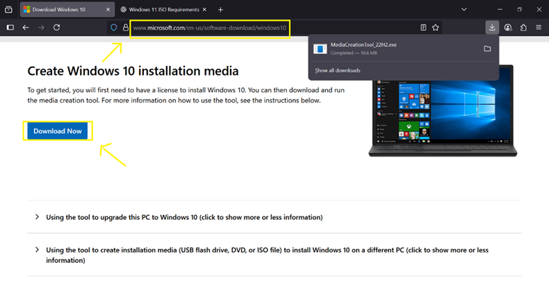
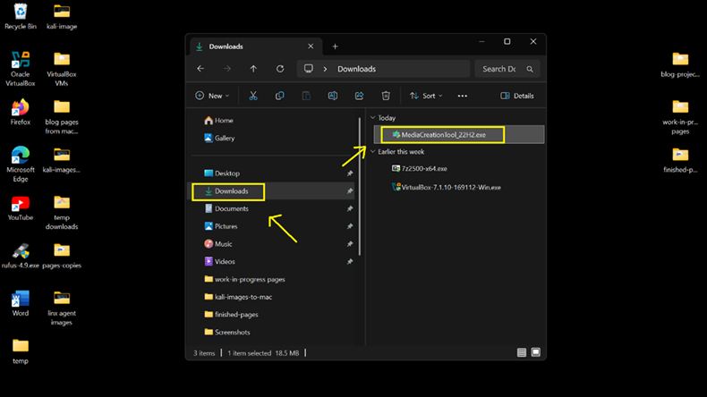
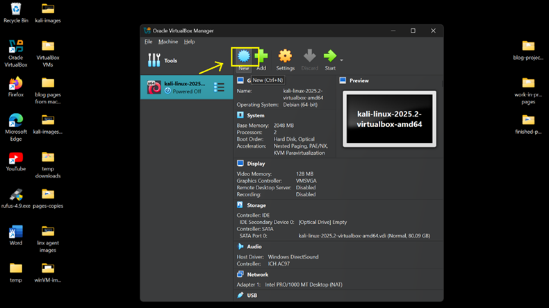
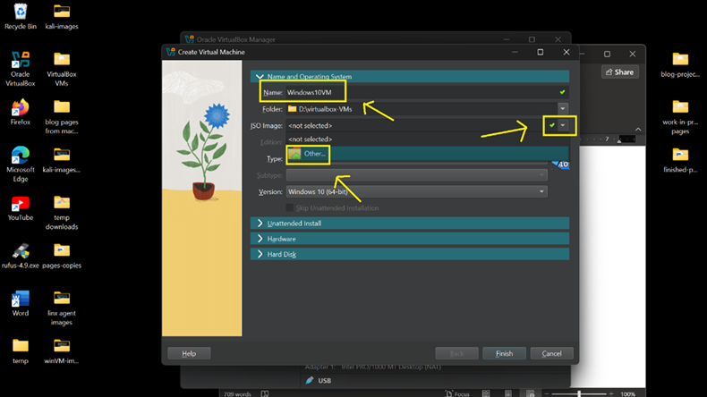
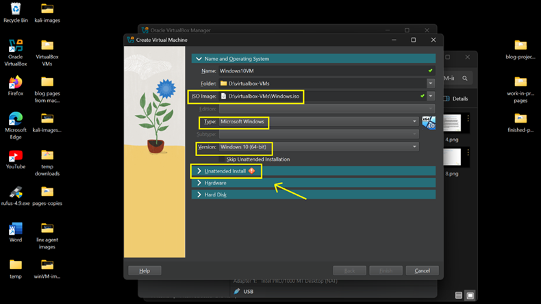
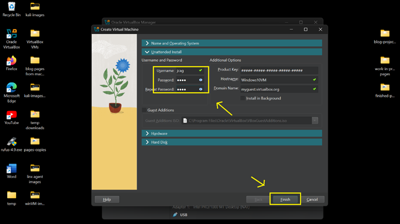
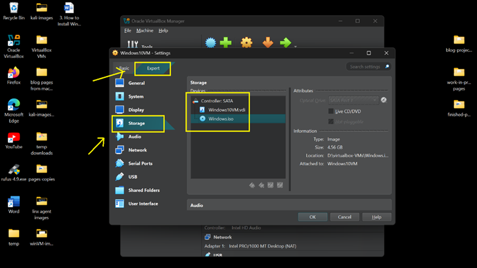
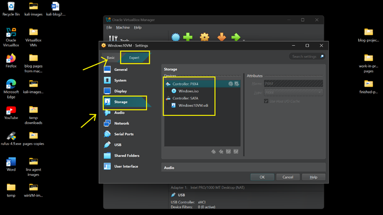
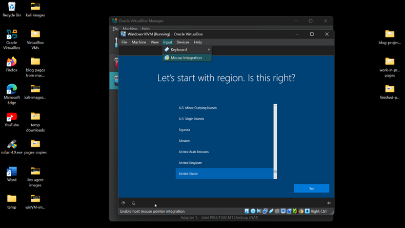
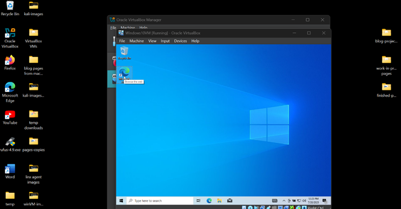

Overview
This guide explains how to deploy a Windows 10 virtual machine on VirtualBox hypervisor.
What You Will Learn
- Download Windows 10 installation media
- Create a Windows 10 VirtualBox VM
- Configure storage and ISO mounting
- Allocate virtual hardware resources
- Complete Windows installation
Step 1 — Download Windows 10 ISO
- Navigate to Microsoft's Windows 10 download page.
- Download the Media Creation Tool.
- Launch MediaCreationTool_22H2.exe.
- Select Create Installation Media.
- Choose the ISO File option.
- Save the ISO to your VM storage location.


Step 2 — Create VirtualBox VM
- Open VirtualBox.
- Select New.
- Name the VM Windows10VM.
- Select Windows 10 (64-bit).
- Attach the downloaded ISO.


Step 3 — Configure Virtual Hardware
- Enable Unattended Installation.
- Configure a local username and password.
- Assign system resources.
- Memory: 2048 MB
- Processor: 1 CPU Core
- Disk: 50 GB


Step 4 — Correct Storage Configuration
- Open VM Settings.
- Navigate to Storage.
- Remove the existing ISO attachment.
- Add an IDE Controller (PIIX4).
- Reattach the Windows ISO.


Step 5 — Install Windows 10
- Start the virtual machine.
- Boot from the mounted ISO.
- Select the appropriate region settings.
- Click Install Now.
- Select Windows 10 Home.
- Choose Custom Installation.
- Select the unallocated virtual disk.
- Complete the installation wizard.


Install Complete
Windows 10 is now successfully deployed and ready for network adapter configuration later.